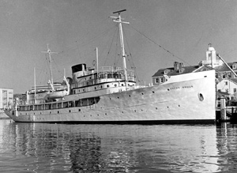

|  copyright - WHOI |
|
Aras, a long graceful steel ship, was originally built for Hugh J. Chisholm of the Oxford Paper Co. as a private yacht. The US Navy purchased the vessel in April 1941, for $250,000, for use as a patrol gunboat and re-christened it USS Williamsburg.
In 1945, after a successful tour of duty in the North Atlantic, Williamsburg was to be converted to an amphibious-force flagship. Instead, she was refitted at the Naval Gun Factory, Washington, DC, as President Truman’'s yacht. President Eisenhower decommissioned the yacht in 1953 due to her high operating costs. The National Science Foundation acquired the vessel on 8/9/1962, refitted it for science, and christened it Anton Bruun in memory of the noted Danish marine biologist who chaired the first International Oceanographic Commission.
The vessel was chartered to WHOI for the International Indian Ocean
Expedition, originally for a 4 year period. Anton Bruun made 9 legs
of a cruise for this project, from March 1963 to December 1964, and then
returned to the Navy in late December 1964. In 1980 the Endangered Properties
Program planned to restore the vessel, but as late as 1984 nothing had
been done.